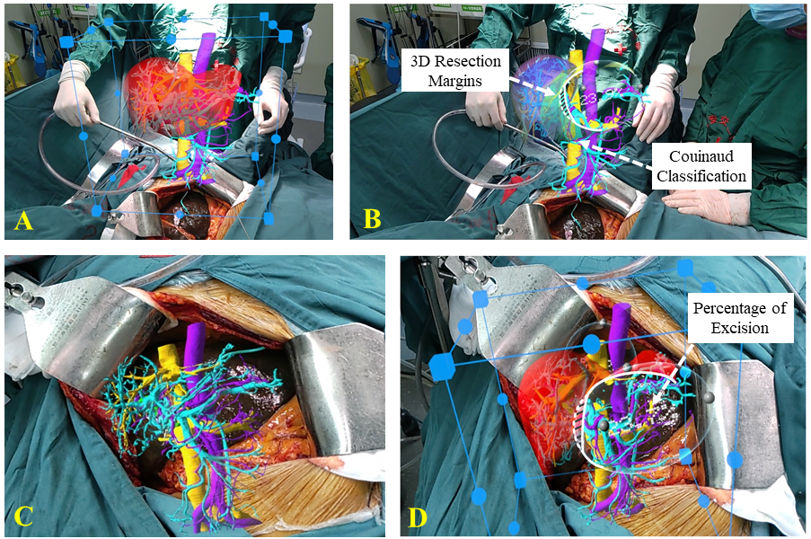

|
Zheng Han (韩政)
About Me
Hi, I am a graduate student at Xidian University, under the supervision of Fuzheng Yang and Jiarun Song. I received my B.S. degree from the Xidian University of Telecommunications Engineering in 2020.
My research interest is Computer Vision, Virtual/Mixed Reality and Light Field Imaging. Currently, I am doing research on Machine Learning, focusing on the compression and transmission of 3D face videos.
Research
Research Interests
-
Computer Vision
-
Virtual/Mixed Reality
-
Light Field Imaging
Current Works
Competitions and Awards
M.S., Communication and Information Engineering, Xidian University, 08.2020 - Present
-
Class Rank: 1st/584 (Average Score: 93.66/100).
-
The project "Visual Switching Technology Based on Viewpoint Tracking" cooperated with Huawei participated in the 2020 Global Mobile Broadband Forum (MBBF2020).
-
Won the title of "Excellent Graduate Student" of Xidian University.
-
Personal Chinese blog has more than 240,000 visits.
B.S., Telecommunications Engineering, Xidian University, 09.2016 - 06.2020
Projects
|

|
Real-Time Mixed Reality Guidance in Hepatectomy: Perform Simple, Clean, and Fast Surgery
Conventional hepatectomy faces many challenges.
Specifically, the structure of liver blood vessels is complex, and intraoperative emergencies are common.
More seriously, excessive liver resection will have an impact on patients’ postoperative liver function, cause postoperative complications, and ultimately impede patients’ recovery.
All these factors pose great challenges for surgeons to perform a safe hepatectomy.
In response to these challenges, we developed the first interactive mixed reality operation-supportive system.
This system provides real-time visualization of surgical anatomy to guide the implementation of resection plans, ultimately helping surgeons perform a simple, clean, and fast surgery.
Our system has been integrated into the standard operating procedures for hepatectomy by the Department of Hepatobiliary Surgery of the First Affiliated Hospital of Xi'an Jiaotong University. Our findings will promote the development of precision surgery.
[Project Page]
|

|
Keypoint-Driven Neural Head Avatars
Compared with 2D display, 3D display can provide a more immersive visual experience for users.
However, as the information carrier for 3D display, 3D models face the issue of an excessively large data volume.
This issue will lead to excessive network transmission overhead when transmitting 3D models, ultimately hindering the commercialization of 3D imaging technology.
Aiming at solving the above problems, a 3D facial video compression and transmission project based on self supervised learning is being investigated.
We conduct research on video conferencing scenarios, striving to achieve high-quality 3D facial video transmission under the constraint of low bit rate.
[Project Page]
|

|
A 3D Live Broadcast System in Mixed Reality
Video chats in the future will not be limited by a small two-dimensional screen.
The best way to foresee the future is to make it.
We implemented a true 3D live broadcast system in mixed reality, aiming to bring people a fully immersive video chat experience.
[Project Page]
|

|
Visual Switching Technology Based on Viewpoint Tracking
Wearing a virtual reality head-mounted display for a long time will cause serious visual fatigue, even dizziness and nausea, which gives users a very bad experience.
One of the main factors causing this problem is the accommodation-vergence conflict (AVC).
However, the rendering methods used in the current virtual reality system can not effectively alleviate the AVC effect.
To solve this problem, we propose a dynamic depth-of-field rendering technique.
According to the visual perception characteristics of human eyes, this technology dynamically renders the scene into a picture closer to the natural perception of human eyes.
[Project Page]
|
|